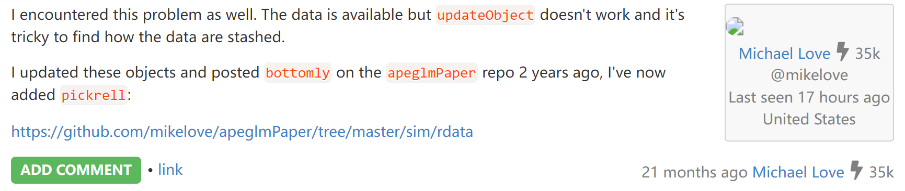
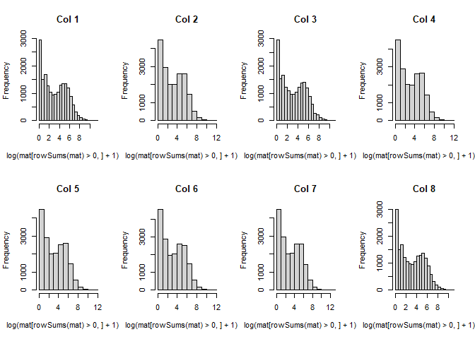
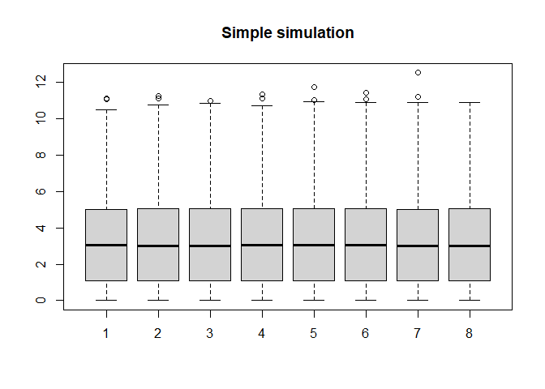
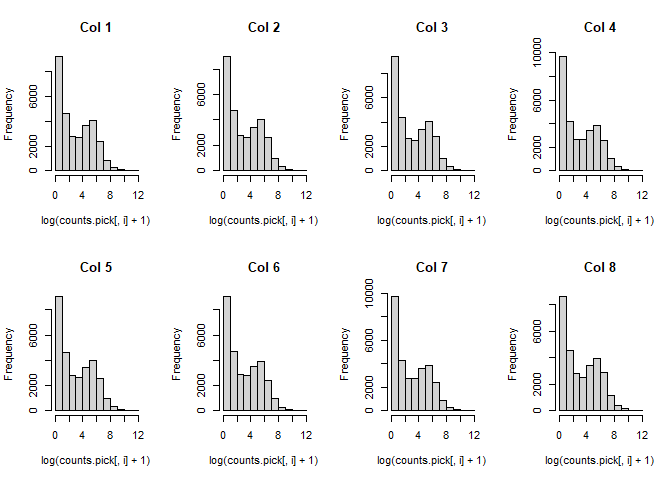
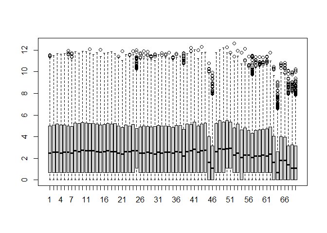
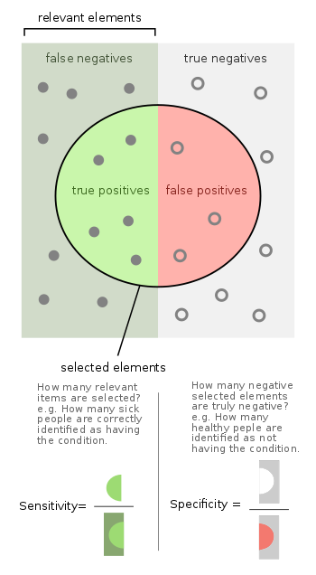

在评估不同软件性能的时候，我们会需要模拟一些数据。由于模拟数据当中的情况是已知的，例如差异表达基因的数目。因此，通过比较不同软件在模拟数据上的效果，我们可以获得软件的量化性能指标，例如灵敏度、特异性和准确度等。
本文根据 DESeq2 文章中的方法记录如何进行简单的基于负二项分布（Negative Binomial distribution）模拟RNA-seq基因表达数据。
为了模拟基因表达数据，我们需要：
- 从已知的测序数据中获取基因表达的均值与离散程度作为负二项分布的参数
- 构建样本信息，包括基因数目、样本数目、差异表达程度和样本分组等
- 基于负二项分布模拟基因表达数据
Mean-Dispersion Estimation
首先，我们从2010 Nature发布的RNA-seq数据中，获取真实基因表达的均值(mean)与离散程度(dispersion)，以此作为我们模拟表达的基因的均值与离散程度。
DESeq2paper 提供了该数据的 RData (https://www.huber.embl.de/DESeq2paper/data/pickrell_sumexp.RData)
但是，在实际操作过程中，发现从 DESeq2paper 主页上下载的数据在读入后会出错
1 | load("data/pickrell_sumexp.RData") |
搜索发现 DESeq2 作者 Michael Love 本人也遇到这个问题
https://support.bioconductor.org/p/131099/

但他也没有修复这个官网上的数据，而是把修复的数据放到：https://github.com/mikelove/apeglmPaper/blob/master/sim/rdata/pickrell_sumexp.RData
下载该数据，放到项目目录的 data/ 文件夹下。
接下来，使用 DESeq2 中的函数从数据中获取基因表达的均值与离散程度。
pickrell 数据中包含69个样本共56299个基因的表达数据
1 | # mean-dispersion estimation from pickrell |
数据的均值和离散程度分别存储在 mcols(ddspickrell) 的 baseMean 和 dispGeneEst 列。
1 | ddspickrell <- DESeqDataSet(pickrell, ~1) |
提取离散程度大于 1e-06 的基因的均值与离散程度，并保存供后续分析所用
1 | # keep gene with dispersion greater than 1e-06 |
Simple Simulation
假设我们需要模拟一组数据，包含两组样本，每组4个重复，20000个基因，其中有20%的基因发生两倍差异表达。
1 | # gene expression data simulation following negative binomial ditribution |
简单可视化展示模拟数据。这里把不表达的基因去除后进行可视化，基因表达的直方图表明我们的数据整体还是符合负二项分布的
1 | par(mfrow=c(2,4)) |

1 | par(mfrow=c(1,1)) |

与Pickrell数据进行比较。这里使用稍微严格一点的过滤条件
1 | # pickrell dataset |

1 | par(mfrow=c(1,1)) |

在Pickrell数据当中样本之间的整体表达情况会有一点波动，而我们模拟的数据没有。这可能是由于实验操作或者生物体之间的误差引起的，而模拟数据并不存在这种这种误差。我们也可以人为引入这种误差来更好地模拟真实数据。
Assessment
最后，我们使用 DESeq2 对模拟数据进行差异分析，测试模拟数据
1 | # DE with DESeq2 |
使用模拟数据进行差异分析发现约23%的基因具有2倍以上的差异表达，但如果考虑 adjusted p-value < 0.1 的话，则只有5%左右的基因具有显著差异表达。同时，我们可以发现有37%的基因被认为是低表达（基因的平均counts < 5）的情况。
进一步，我们通过灵敏度（sensitivity）和特异性（specificity）评估 DESeq2 在模拟数据上的表现

Figure: Wiki
sensitivity, recall, hit rate, or true positive rate (TPR)
specificity, selectivity or true negative rate (TNR)
1 | nonzero <- rowSums(counts(e)) > 0 |
以上只是单次模拟的结果，如果需要对软件的性能进行评估，我们应当进行多次模拟，然后再进行性能评估。
Ref:
DESeq2: https://genomebiology.biomedcentral.com/articles/10.1186/s13059-014-0550-8
DESeq2paper: https://www.huber.embl.de/DESeq2paper/
biostar handbook|How to simulate sequencing results: https://blog.actorsfit.com/a?ID=01000-a374125f-99d7-452a-99f9-61466d0a3ee6
完